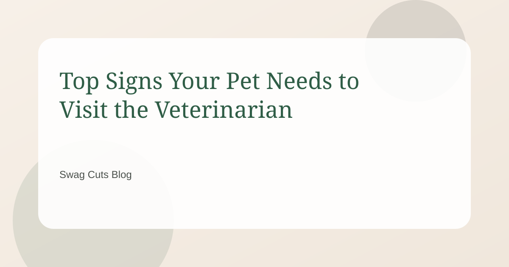
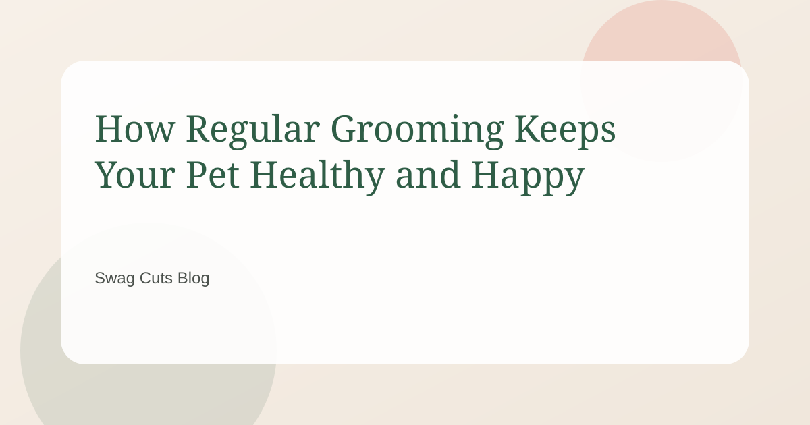
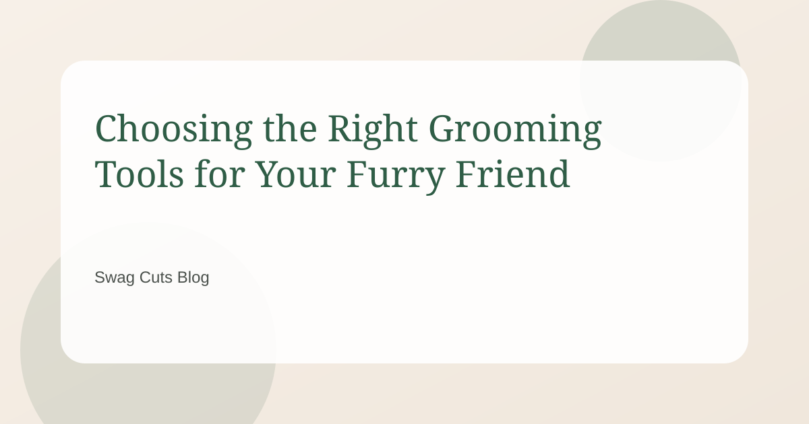
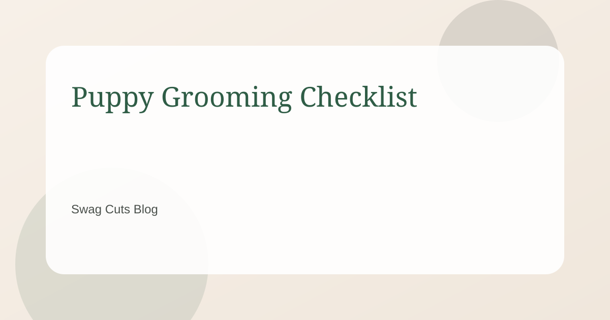
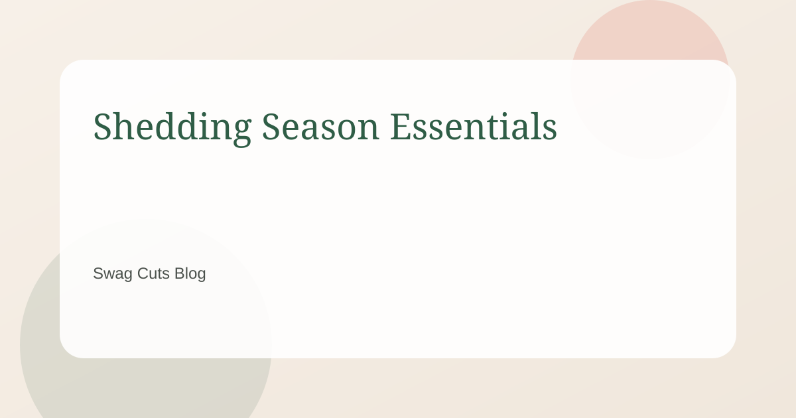
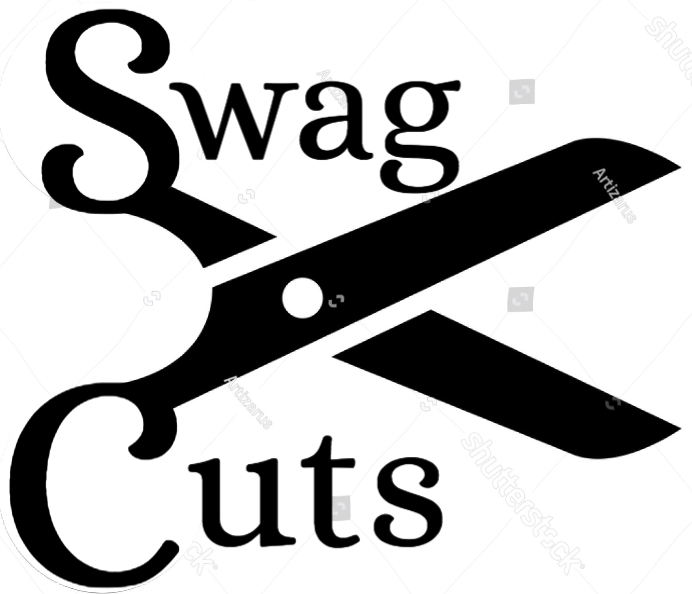

Swag Cuts Blog
Guides, grooming advice, and product recommendations.

When to seek professional grooming or veterinary care
Decide when to book a groomer vs. a vet.
Read article
Creating a positive grooming experience for your pet
Build calm routines with gentle handling and rewards.
Read article
Common grooming mistakes pet owners should avoid
Fix small missteps that can cause discomfort.
Read article
Understanding routine veterinary checkups for pets
Know what to expect and how often to visit.
Read article
Top signs your pet needs to visit the veterinarian
Warning signs that should not wait.
Read article
How regular grooming keeps your pet healthy and happy
Skin, comfort, and early detection benefits.
Read article
Choosing the right grooming tools for your furry friend
Pick the best tools for your coat type.
Read article
How to spot health problems during pet grooming
Use grooming time to catch issues early.
Read article
Simple pet grooming tips for a shiny coat at home
Easy habits that keep coats glossy.
Read article
Puppy grooming checklist
Prep your pup with safe steps for first-time grooming.
Read article
Shedding season essentials
Tools and routines that keep fur under control.
Read article
Swag Cuts shop picks
Browse curated grooming essentials and affiliate picks.
View products